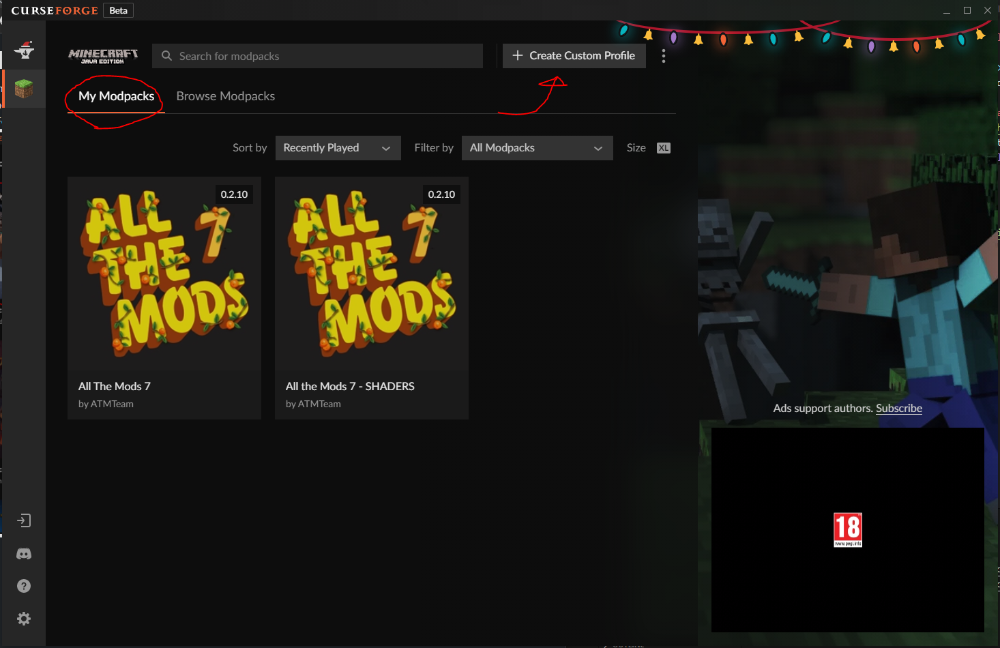
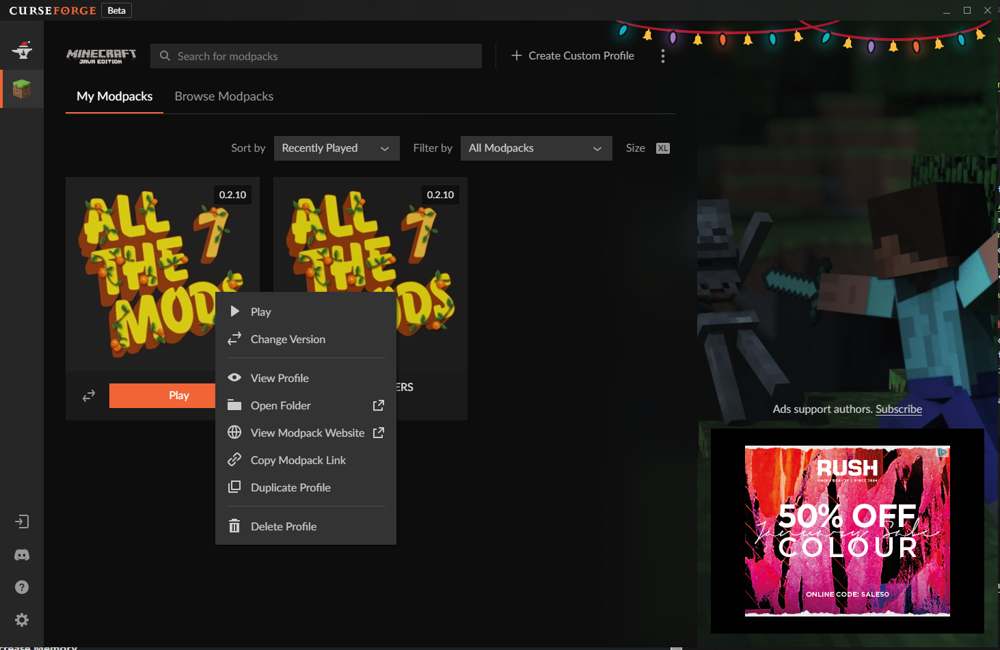
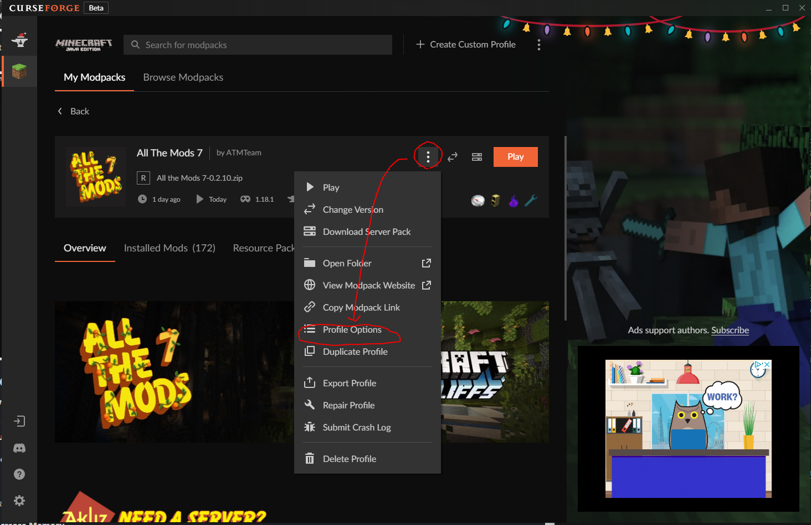
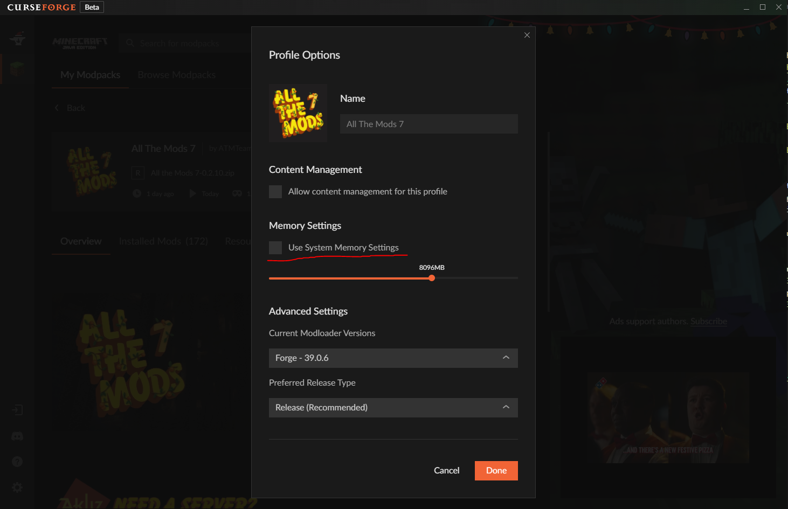

How To Install All The Mods 7 (ATM) Using CurseForge
1. Download and Install CurseForge
2. Download the modpack
3. Open CurseForge, select Minecraft (Java Edition)
4. Click on "My Modpacks" and press on "Create Custom Profile"
5. Between "Create Profile" and "Profile Name" there's a button that says "import". Click it and select the modpack you downloaded.
The Modpack will now install.
For improved performance you can install OptiFine.
After the installation is complete, you can login with your minecraft details and launch the game. Make sure you increase the amount of memory to play beforehand
The server should appear automatically in multiplayer.
THIS IS IMPORTANT
Increase the memory for the modpack (6GB Minimum)
To Increase Memory
Right click on the modpack and press View Profile
Then, click the 3 dots and select Profile Options
Make sure to UNTICK Use System Memory Settings and select at least 6GB of RAM.
